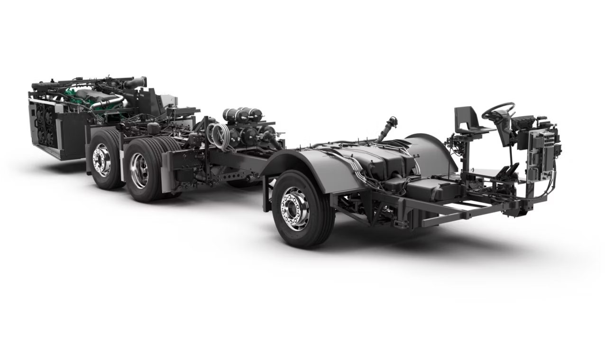

Training that was scattered across depots, binders and one-off workshops
Coach fleets run for hundreds of thousands of kilometres. A missed brake check or an outdated diagnostic step costs far more than a late bus. The learning had to be consistent, quick to reach and easy to prove.
Every coach is a promise to passengers. The people who prepare, drive, sell and service it need the same up-to-date knowledge, in the same words, wherever they work.
Fragmented content
Manuals, slide packs and videos lived in separate places, and depots taught the same task in different ways.
No time to learn
Technicians and drivers work in shifts. Long classroom days meant cover costs and little practice on the job.
Little proof of skill
Completion was recorded, but nobody could see which skills were secure and which needed refreshing.
A learning ecosystem, not a course catalogue
Six connected experiences share one login, one skills record and one look. Select a node to see what it contains.
Three learners, three routes through the same academy
Needs a fast answer at the vehicle
Works in a bay with gloves on, a tablet nearby and a coach that must leave by morning.
- Scans a QR code on the coach to open the exact procedure
- Practises rare faults in a virtual workshop before meeting them
- Earns a skills badge that unlocks higher-voltage tasks
Needs short lessons between routes
Learns on a phone in the depot canteen, with patchy signal on the road.
- Five-minute lessons that download for offline use
- Scenario clips on hazards, passenger care and eco-driving
- A weekly nudge with one question to keep skills fresh
Needs to explain the product with confidence
Talks to fleet owners about range, maintenance cost and uptime.
- Product explainers with interactive cut-away views
- Role-play conversations with feedback on tone and accuracy
- A comparison tool for quick answers during a call
One hub on desktop, the same academy in the pocket
Continue where you left off
Recommended for your role
4 minutesDue this week
Learner hub on desktop: pathways, progress and skills due.
What is your first action when a tyre warning light comes on?
Driver app: short, offline-ready lessons.
Try a five-minute lesson: the pre-trip inspection
An interactive microlearning module of the kind built in Storyline. Select each numbered point on the chassis, read the check and answer the quick question.

Select a numbered point to inspect it.
How the ecosystem would prove it works
Measured across four levels, using the Kirkpatrick model, so leaders see skills and safety, not only completions.
Reaction
Pulse ratings after each lesson on relevance and clarity.
Learning
Scenario scores and skills badges linked to each task.
Behaviour
Supervisor spot-checks and job-aid usage at the vehicle.
Results
Fewer repeat faults, less roadside downtime, faster onboarding.
Independent concept project created for portfolio purposes. It is not affiliated with, endorsed by or produced for Volvo. Product photographs and names belong to their respective owners; all learning content, people, screens and figures shown here are invented for demonstration.